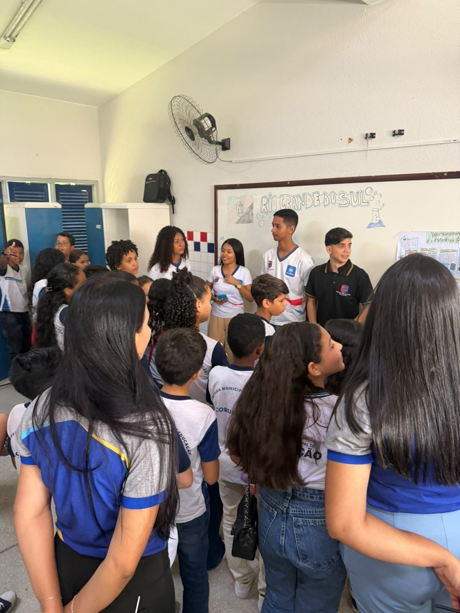

Experimento
Feira de Ciências 2026
3º Matutino B
- Estado: Rio Grande do Sul
- Prof.: Leandro Carvalho
Na Feira de Ciências 2026, a turma representou o estado do Rio Grande do Sul, apresentou um experimento sobre a obtenção e a produção do álcool e estudou as enchentes do estado pela Química, pela Física e pela Biologia.

Experimento
O que a turma apresentou
Cientistas
Quem a turma pesquisou
A turma escolheu um cientista para cada área e relacionou o trabalho dele às enchentes do Rio Grande do Sul.
Química
J. Fraser Stoddart
Prêmio Nobel de Química 2016
Desenvolveu pesquisas sobre moléculas artificiais e máquinas moleculares, contribuindo para o avanço da nanotecnologia.
Ler mais
Tema da turma: a química da água durante as enchentes do Rio Grande do Sul.
Relação com o tema: explicar como a Química ajuda a compreender e identificar substâncias presentes na água das enchentes.
Física
Kip Thorne
Física teórica e astrofísica
Desenvolveu pesquisas sobre buracos negros, relatividade e ondas gravitacionais e recebeu o Prêmio Nobel de Física em 2017.
Ler mais
Tema da turma: a força e o movimento da água nas enchentes do Rio Grande do Sul.
Relação com o tema: utilizar conceitos da Física para explicar a força, a pressão e a velocidade da água durante as enchentes.
Biologia
Carlos Nobre
Climatologia e mudanças climáticas
Desenvolve pesquisas sobre o aquecimento global, o desmatamento da Amazônia e os impactos das mudanças climáticas no meio ambiente.
Ler mais
Tema da turma: impactos das enchentes na vida e nos ecossistemas do Rio Grande do Sul.
Relação com o tema: explicar como eventos extremos e mudanças ambientais afetam os animais, as plantas, os microrganismos e os ecossistemas.
Fotos
Fotos do dia
Toque em uma foto para ver em tamanho maior.